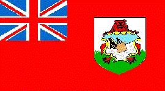

Bermudas
|  |
Información General
Nombre oficial: Bermudas
Área: 53 km²
División política: Colonia de la Corona Británica
Unidad monetaria: Dólar de Bermudas
Idiomas: Inglés (oficial), portugués (no oficial)
Gentilicio: de Bermudas
Curiosidades
Las formaciones coralinas de Bermudas dan a las arenas de sus playas un color rosado.
La altura máxima de Bermudas es de sólo 79 metros.
Perfil Ecónomico
Perfil Demográfico
Población: 62.099 hab.
Densidad de población: 1.200 hab/km²
Perfil Cultural
Alfabetismo 98%
Religión:
- Anglicanos: 38,6%
- Protestantes: 24,0%
- Católicos: 21,6%
- No religiosos: 3,9%
- Protestantes marginales: 2,9%
Sistema de Gobierno
Constitución vigente: 8 de junio de 1968 (enmendada en 1973, 1979)
Sistema ejecutivo: Gobernador (representante del monarca británico), Primer Ministro, gabinete.
Sistema legislativo: Asamblea (cuarenta miembros de elección popular) y Senado (once miembros nominados). Establecido en 1620, es uno de los más antiguos cuerpos legislativos existentes.
Sistema judicial: Corte Suprema y cortes menores.
Aproximación histórica
Bermudas es un archipiélago situado a 917 Km al este de Carolina del Norte (EU) y que comprende 150 islas pequeñas, veinte de ellas habitadas. Las islas tienen suelo calizo y permeable, cubierto en un 20 % de vegetación. La Corriente del Golfo atempera sus aguas y ejerce un efecto moderador sobre el clima, con una temperatura media anual del orden de los 21 C.
Las islas son avistadas en 1503 por el explorador español Juan de Bermúdez, a quien deben su nombre. En 1609 una expedición británica naufraga y ocupa las islas que pasan a poder de la Corona Británica en 1684.
El turismo es una de las actividades principales y el territorio de Bermudas es un importante centro corporativo internacional.
«-- ir al comienzo
«-- regresar